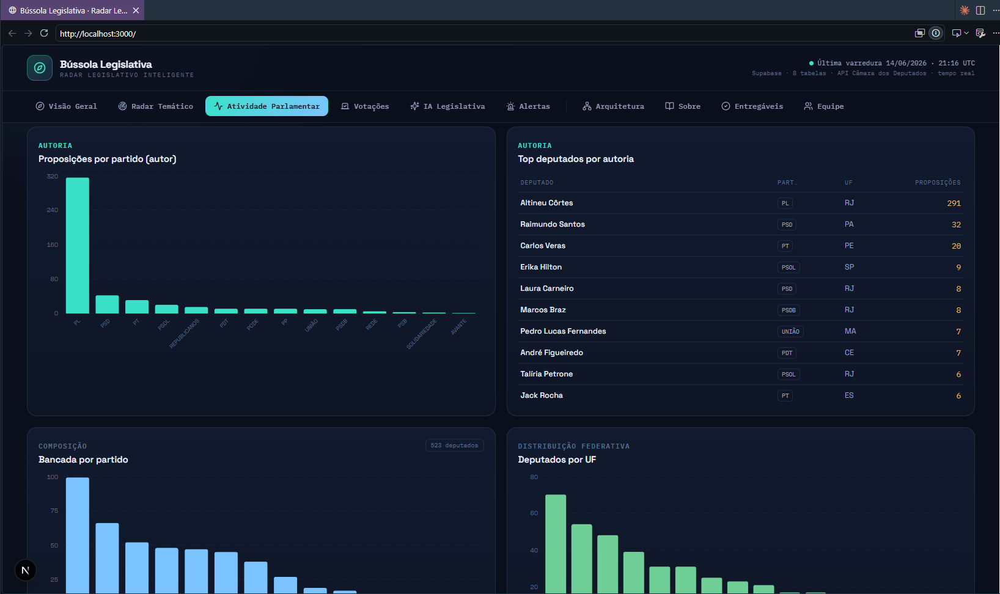

BÚSSOLA PÚBLICA · PÓS-TECH XPERIUN · 2026
Insights extraídos da Câmara dos Deputados com IA Generativa
DATASET · VISÃO GERAL
Dados referentes à 57ª Legislatura — deputados em exercício, proposições recentes e despesas do ano de 2025 (CEAP).
CAPÍTULO 1 · OS PARLAMENTARES
523 deputados de 21 partidos em 27 estados — perfil e distribuição.
OS PARLAMENTARES · PARTIDOS
TOP ESTADOS POR DEPUTADOS
PL sozinho representa 19,3% das cadeiras. Os 5 maiores partidos controlam 63% da Câmara.
CAPÍTULO 2 · GASTOS CEAP
Cota para Exercício da Atividade Parlamentar — ~145 mil registros de 2025 (pipeline próprio).
GASTOS CEAP · ANÁLISE
TOP CATEGORIAS DE GASTO
SELECT
tipo_despesa,
COUNT(*) AS registros,
SUM(valor_liquido) AS total_r
FROM fato_despesas
WHERE ano = 2025
GROUP BY tipo_despesa
ORDER BY total_r DESC;
-- PK: (cod_documento, parcela)
-- ~500 calls HTTP, ~20 min extração
COTA MENSAL MÁXIMA
O teto da CEAP varia por estado: entre R$ 30.788 (DF) e R$ 45.612 (AM). Deputados que excedem têm reembolso negado.
Nosso modelo preserva valor_liquido (após glosas) para análise real.
Combustíveis lideram os gastos — deslocamentos entre Brasília e os estados de origem dos parlamentares.
CAPÍTULO 3 · AS PROPOSIÇÕES
1.550 proposições classificadas por IA em 10 temas, com resumo executivo gerado por GPT-4o-mini.
PROPOSIÇÕES · TIPOS & IA
TIPOS DE PROPOSIÇÃO
BUSCA SEMÂNTICA HABILITADA
Cada proposição tem um vetor 1.536-d via text-embedding-3-small. Busca por similaridade com operador <=>.
DISTRIBUIÇÃO TEMÁTICA · AMOSTRA
Saúde lidera
18% das proposições tratam de saúde pública — o tema mais legislado no período analisado.
Custo de classificação: ~$0.001 por proposição. 1.550 proposições ≈ ~$1,50 no total.
PROPOSIÇÕES · IA EM AÇÃO
INPUT — EMENTA BRUTA
"Altera a Lei nº 9.394, de 20 de dezembro de 1996, que estabelece as diretrizes e bases da educação nacional, para incluir no currículo obrigatório da educação básica o ensino de programação e pensamento computacional."
PROMPT ENVIADO
OUTPUT — RESUMO GERADO GPT-4o-mini
CONTEXTO
Propõe incluir programação como disciplina obrigatória na educação básica (ensino fundamental e médio), alterando a LDB de 1996.
POSIÇÕES
Preparação para mercado de trabalho digital, redução de desigualdade tecnológica.
Custo de formação de professores, infraestrutura necessária nas escolas públicas.
IMPACTO POTENCIAL
Afeta ~48 milhões de estudantes da educação básica pública e privada. Demanda capacitação de ~2,2 milhões de professores.
Prompt versionado em src/ai/prompts/resumo_executivo.md — rastreável no git como qualquer código.
CAPÍTULO 4 · AS VOTAÇÕES
100 votações carregadas — nominais e simbólicas, com resultado e data.
VOTAÇÕES · PADRÕES
TIPOS DE VOTAÇÃO
NOMINAL
Cada deputado vota individualmente — voto registrado por nome. Obrigatório para PECs e votações polêmicas. Permite accountability.
SIMBÓLICA
Aprovação por aclamação — sem registro individual. Usado para matérias de menor controvérsia. Mais rápido.
SELECT
resultado,
COUNT(*) AS total
FROM fato_votacoes
GROUP BY resultado;
-- resultado | total
Aprovado | 65
Rejeitado | 28
Encerrado sem votação| 7
ENTREGUE · PÓS V1
Votos individuais por deputado já carregados via /votacoes/{id}/votos — habilita "como cada partido votou" e o cruzamento tema × partido no dashboard.
Votações nominais permitem cruzar com o perfil do deputado — partido, estado, bancada — para análise de coalização.
PÓS V1 · AUTORIA REVELADA
O /proposicoes não traz o autor. A ponte N:N (/proposicoes/{id}/autores) revela a coautoria real.
O QUE A PONTE HABILITA
• Proposições por partido (autor)
• Top deputados por autoria
• Heatmap tema × partido
• Autor principal desnormalizado (proponente)

Antes da ponte, autor_id era 100% nulo — o painel de autoria ficava vazio. Agora ele preenche em tempo real.
ENTREGA · DASHBOARD AO VIVO
Bússola Legislativa — Next.js 16 + Supabase, leitura ao vivo das views, auto-refresh a cada 60s.
9 seções — Visão Geral, Radar Temático, Atividade, Votações, IA Legislativa, Alertas, Arquitetura, Sobre, Equipe.
HORIZONTE · O QUE VEM ADIANTE
Painel Next.js 16 ao vivo no Supabase: deputados, CEAP, proposições, autoria, votos e heatmap tema × partido.
Workflow semanal: e-mail com o Top 5 proposições da semana (tema crítico + nº de autores) para a equipe.
Sobre os votos nominais já carregados: score de fidelidade partidária, quem vota com a oposição — e quando.
Séries temporais de proposições por tema. Evolução dos gastos CEAP por legislatura. Sazonalidade parlamentar.
Chatbot que responde "quais deputados votaram a favor da reforma tributária?" — RAG sobre fato_votacoes + proposições.
Endpoints públicos para jornalistas e pesquisadores. Dados estruturados + enriquecidos por IA, acessíveis via REST.
O pipeline já está ao vivo. O produto ainda está nascendo.
Dados abertos são o
começo da conversa.
523 deputados, ~145 mil despesas, 1.550 proposições enriquecidas por IA — o Congresso nunca foi tão legível para o cidadão comum.
Bússola Pública · Pós-Tech Engenharia de Dados Xperiun · 2026